Automatic Plot of Combined Multi Dist Data
Source:R/autoplot-combined-dist.R
tidy_combined_autoplot.RdThis is an auto plotting function that will take in a tidy_
distribution function and a few arguments, one being the plot type, which is
a quoted string of one of the following:
densityquantileprobablityqq
If the number of simulations exceeds 9 then the legend will not print. The plot subtitle is put together by the attributes of the table passed to the function.
Usage
tidy_combined_autoplot(
.data,
.plot_type = "density",
.line_size = 0.5,
.geom_point = FALSE,
.point_size = 1,
.geom_rug = FALSE,
.geom_smooth = FALSE,
.geom_jitter = FALSE,
.interactive = FALSE
)Arguments
- .data
The data passed in from a the function
tidy_multi_dist()- .plot_type
This is a quoted string like 'density'
- .line_size
The size param ggplot
- .geom_point
A Boolean value of TREU/FALSE, FALSE is the default. TRUE will return a plot with
ggplot2::ggeom_point()- .point_size
The point size param for ggplot
- .geom_rug
A Boolean value of TRUE/FALSE, FALSE is the default. TRUE will return the use of
ggplot2::geom_rug()- .geom_smooth
A Boolean value of TRUE/FALSE, FALSE is the default. TRUE will return the use of
ggplot2::geom_smooth()Theaesparameter of group is set to FALSE. This ensures a single smoothing band returned with SE also set to FALSE. Color is set to 'black' andlinetypeis 'dashed'.- .geom_jitter
A Boolean value of TRUE/FALSE, FALSE is the default. TRUE will return the use of
ggplot2::geom_jitter()- .interactive
A Boolean value of TRUE/FALSE, FALSE is the default. TRUE will return an interactive
plotlyplot.
See also
Other Autoplot:
tidy_autoplot(),
tidy_four_autoplot(),
tidy_multi_dist_autoplot(),
tidy_random_walk_autoplot()
Examples
combined_tbl <- tidy_combine_distributions(
tidy_normal(),
tidy_gamma(),
tidy_beta()
)
combined_tbl
#> # A tibble: 150 × 8
#> sim_number x y dx dy p q dist_type
#> <fct> <int> <dbl> <dbl> <dbl> <dbl> <dbl> <fct>
#> 1 1 1 1.55 -3.66 0.000217 0.5 0.853 Gaussian c(0, 1)
#> 2 1 2 0.140 -3.51 0.000606 0.508 0.0459 Gaussian c(0, 1)
#> 3 1 3 -0.993 -3.36 0.00149 0.516 -0.557 Gaussian c(0, 1)
#> 4 1 4 1.07 -3.21 0.00320 0.524 0.544 Gaussian c(0, 1)
#> 5 1 5 -0.836 -3.06 0.00603 0.533 -0.466 Gaussian c(0, 1)
#> 6 1 6 0.134 -2.90 0.0100 0.541 0.0430 Gaussian c(0, 1)
#> 7 1 7 -0.726 -2.75 0.0148 0.549 -0.405 Gaussian c(0, 1)
#> 8 1 8 0.971 -2.60 0.0196 0.557 0.486 Gaussian c(0, 1)
#> 9 1 9 -1.35 -2.45 0.0237 0.565 -0.785 Gaussian c(0, 1)
#> 10 1 10 1.36 -2.30 0.0271 0.573 0.724 Gaussian c(0, 1)
#> # … with 140 more rows
#> # ℹ Use `print(n = ...)` to see more rows
combined_tbl %>%
tidy_combined_autoplot()

combined_tbl %>%
tidy_combined_autoplot(.plot_type = "qq")